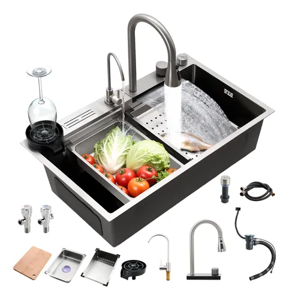

El secreto de la repostería perfecta cuesta menos de lo que imaginas

Si alguna vez has intentado seguir una receta de pastel, metiste "una taza de harina" exacta según tus medidores, horneaste la mezcla y el resultado fue un bloque denso e incomible, no fuiste tú. Fue la física. El problema no es tu horno ni tus habilidades, es que estás midiendo volumen en lugar de peso.
En el mundo de la cocina seria (y de las dietas estrictas), el volumen es el enemigo. Pusimos a prueba una de las básculas digitales de cocina más vendidas y económicas del mercado para demostrar por qué es el electrodoméstico pequeño más importante que aún no tienes.
Por qué "una taza" no siempre es una taza
Hicimos el experimento clásico. Le pedimos a tres personas diferentes que sacaran "una taza de harina" del paquete usando el mismo medidor. La persona A la sacó con cuidado, pesando 120 gramos. La persona B aplastó la harina para que cupiera más, pesando 150 gramos. Esa diferencia de 30 gramos en repostería es la diferencia entre un pastel esponjoso y una piedra.
La báscula elimina este problema por completo. Cuando la receta te pide 120 gramos de harina, son 120 gramos, sin importar cómo la pongas en el tazón. Este simple cambio elevará tus resultados de repostería a nivel profesional de la noche a la mañana.
Mejora tus recetas hoy mismo. Revisa el costo de esta báscula
Ver disponibilidad de la BásculaLa función "Tara": Tu mejor amiga
Uno de los mayores beneficios de la báscula que probamos (y de casi cualquier modelo digital moderno) es el botón de "Tara" (Zero). Esta función te ahorra lavar un montón de trastes sucios.
Así es como funciona: Pones tu tazón de mezclar en la báscula, presionas Tara (se pone en 0). Agregas tus 100g de azúcar. Presionas Tara de nuevo. Agregas tus 150g de mantequilla. ¡Todo en el mismo recipiente sin ensuciar tazas medidoras adicionales!
Ideal para contar macros y dietas
Si estás intentando ganar músculo o perder peso, el "ojo de buen cubero" te está saboteando. Cien gramos de pechuga de pollo se ven muy diferentes a 150 gramos, y esos 50 gramos extra de diferencia en cada comida suman cientas de calorías al final de la semana. La báscula digital hace que seguir una dieta sea una ciencia exacta y no una suposición.
Lo que no nos gustó: El modelo que probamos tiene una cubierta de cristal templado. Se ve muy elegante y moderna, pero debes tratarla con cuidado. Si se te resbala una olla pesada encima, la vas a quebrar. Además, sigue usando baterías AAA en lugar de recargarse por USB, lo que en pleno 2024 se siente un poco anticuado.
Conclusión
A diferencia de una batidora de pedestal o un horno sofisticado, una báscula digital cuesta menos que una cena fuera de casa. Por ese precio tan bajo, obtienes precisión matemática en tu repostería, control total sobre tus porciones de dieta y muchos menos trastes que lavar al preparar la comida.
Es, sin lugar a dudas, el mejor retorno de inversión en herramientas de cocina que puedes hacer.